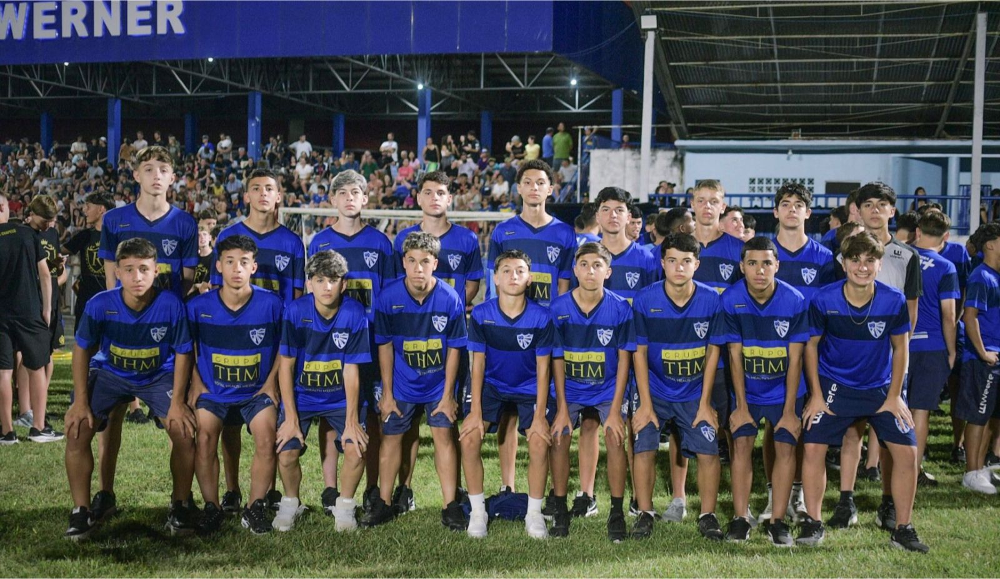

🔴 Ao Vivo 16:30
10ª Copa Maravilha
26 Jan, 2026
Maestro do Estrelado: Ryan pronto para o desafio em Santa Catarina
Meio-campista Ryan da Silva lidera o Cruzeiro na estreia da Copa Maravilha. Acompanhe a transmissão ao vivo às 16:30.
E.C. Cruzeiro-RS
Assistir Jogo ↗